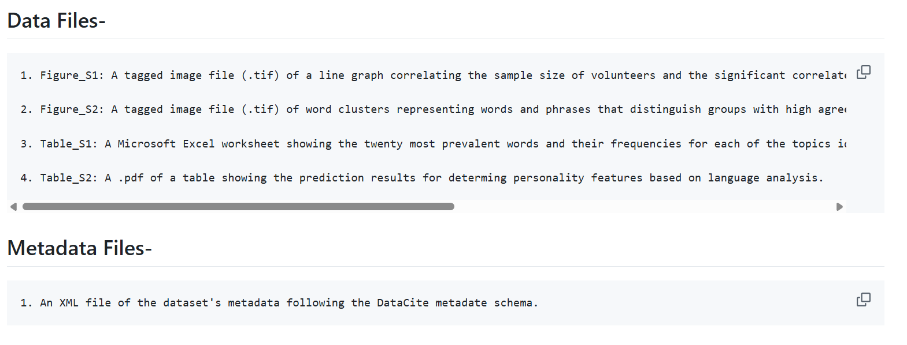

Data Curation
Through the open access repository, Figshare, I accessed a dataset called the Personality, Gender, and Age in the Language of Social Media: The Open-Vocabulary Approach. This dataset included four files: a .tif of a line graph, a .tif of word clusters, a Microsoft Excel worksheet showing word frequencies, and a .pdf of a table.
I curated this data with a repository on Github. This curation included the files from the databse, the database metadata in XML (using DataCite standards), a readme describing the repository, and a final report.
 An image of the metadata's XML is shown in the image above. This XML was not included in the initial dataset. I gathered the data from FigShare and the files in the dataset, researched DataCite standards and XML, and then wrote it out by hand myself. In the final report that was included in the GitHub repository, I discuss the issues with the metadata in the dataset and make recommendations for improvement. The basis of these recommendations was preparing the dataset to be submitted to the PsychArchives repository. An overview of the PsychArchives repository is included, along with the reasoning for submitting the dataset there. The final report was written with the goal of giving readers any information they may need to know about the dataset, PsychArchives, and Figshare so that they can safely store the data while respecting copyright laws.